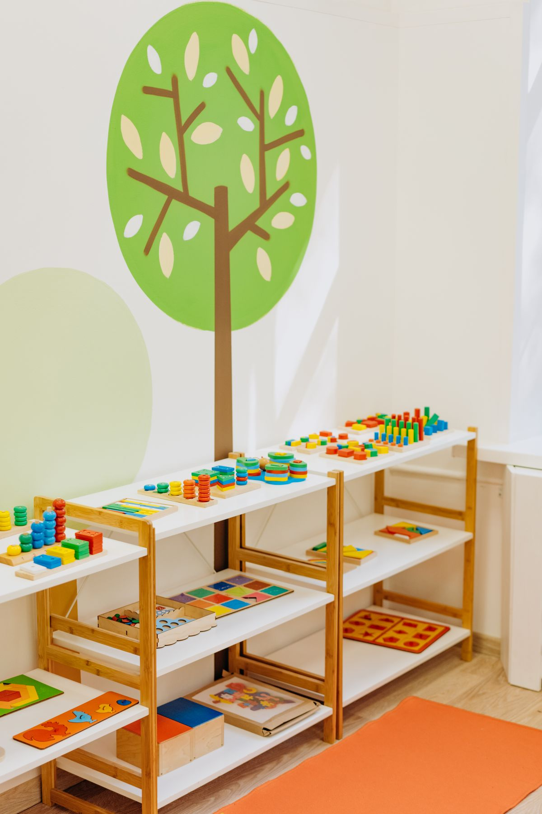
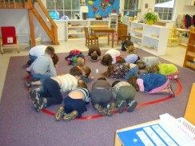
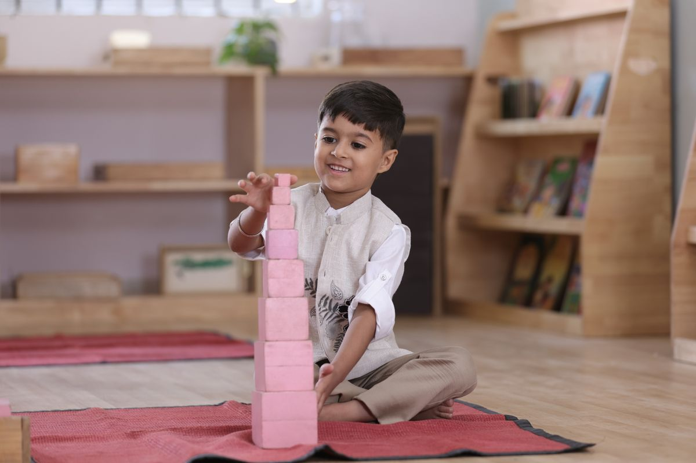

Montessori Preschool, Daphne AL
Eastern Shore Montessori School
A Montessori preschool in Daphne for ages 18 months to 6 years, with art, music, outdoor play, group activities, and summer programs.
Call (251) 626-7505 Email esmontessorischool@gmail.com
Montessori preschool, ages 18 months to 6 years.

Montessori programs
Ages 18 months to 6 years
A Montessori preschool for ages 18 months to 6 years.
Art
Art activities.
Music
Music activities.
Outdoor play
Outdoor play.
Group activities
Group activities.
Summer programs
Summer programs are offered.
About
Eastern Shore Montessori School is a Montessori preschool and early childhood learning center at 980 Main St in Daphne, Alabama, serving ages 18 months to 6 years. The school offers art, music, outdoor play, and group activities, plus summer programs. Hours are Monday through Friday, 6:00 AM to 6:00 PM. Call (251) 626-7505 or email esmontessorischool@gmail.com to ask about enrollment.
Enrollment
Enrollment questions are taken by phone or email. Call (251) 626-7505 or email esmontessorischool@gmail.com to ask about enrollment.
Gallery


One photo is a real photo of the school: children sitting in a circle on a rug in a classroom, with wooden stairs and Montessori materials behind them. The other two are labeled stock photos: brightly colored educational toys and learning materials neatly arranged on low open wooden shelves beneath a painted tree mural, and a young boy sitting on a red floor mat building a tall tower from pink wooden blocks. They show the kind of Montessori setting described on this page, not this school.
Visit
Address: 980 Main St, Daphne, AL 36526
Hours: Monday through Friday, 6:00 AM to 6:00 PM.
Phone: (251) 626-7505
Email: esmontessorischool@gmail.com
Contact
Call (251) 626-7505 Email esmontessorischool@gmail.com
Eastern Shore Montessori School serves Daphne, AL. Questions? Call (251) 626-7505.